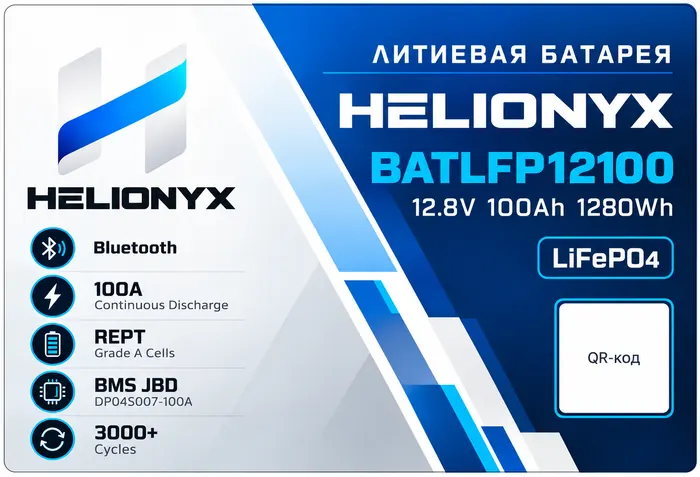
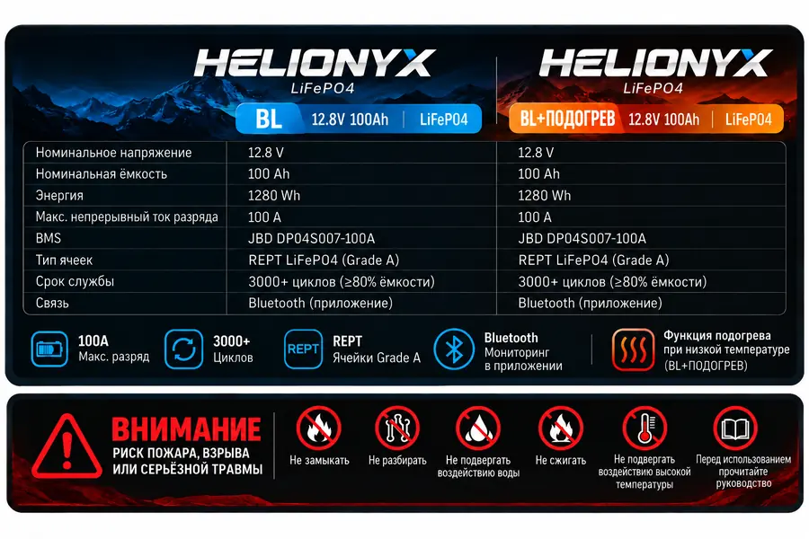

Автодома и кемперы
Сервисное питание освещения, холодильника, насосов, электроники и другой 12V нагрузки.

Финальный макет лицевой маркировки HELIONYX, переданный производителю для пробной партии. Фото готового аккумулятора добавим после производства.
Базовая 12-вольтовая LiFePO4 батарея с Bluetooth BMS для автономного питания, кемпинга и резервных систем.
Цена и срок поставки подтверждаются перед заказом. В продаже появится конфигурация, соответствующая заявленным ниже компонентам.
HELIONYX BATLFP12100 — LiFePO4 аккумулятор номиналом 12.8 В и 100 А·ч. Внутри используются четыре призматические ячейки REPT по 3.2 В 100 А·ч и Bluetooth BMS JBD DP04S007-100A.
Аккумулятор рассчитан на сервисные 12-вольтовые системы: автодома и кемперы, кемпинг, солнечную энергетику, резервное питание и бортовые потребители. Мы не позиционируем эту модель как стартерную батарею для запуска ДВС.
На задней этикетке рядом показаны обе версии батареи, основные характеристики, Bluetooth, REPT Grade A и предупреждения по безопасной эксплуатации.

Для BATLFP12100 без подогрева производитель указывает блокировку заряда при −10 °C и восстановление при −5 °C.
Защита разряда по низкой температуре срабатывает при −20 °C, восстановление — при −10 °C.
Сервисное питание освещения, холодильника, насосов, электроники и другой 12V нагрузки.
Автономный запас энергии для поездок, стоянок и мобильных систем.
Накопитель в 12-вольтовой системе с совместимым контроллером и зарядным оборудованием для LiFePO4.
Для инверторных и резервных систем в пределах допустимого тока BMS.
Как сервисная батарея для бортовых потребителей при соблюдении требований к установке и защите.
Для оборудования, рассчитанного на совместимый диапазон напряжения LiFePO4 4S.
Производитель зафиксировал для этой конфигурации ячейки REPT и BMS JBD и подтвердил, что их замена без письменного согласования не допускается.
По технической декларации производителя для конфигурации доступны UN38.3, MSDS и CE. Документы конкретной партии будем публиковать после получения комплекта от производителя.
Важно для РФ: документы, необходимые для коммерческого ввоза и продажи на российском рынке, оформляются отдельно от заводских транспортных и международных документов.